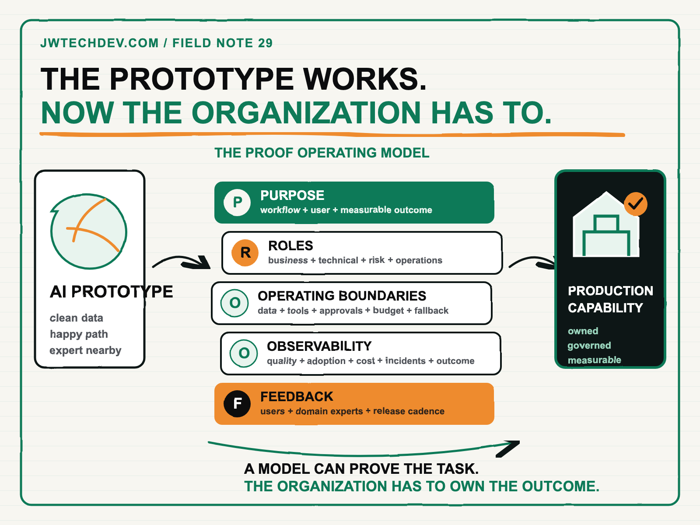

The AI prototype is not the hard part. The organization is.
A prototype can prove that a model can complete a task. Production requires the organization to decide who owns the outcome, which boundaries apply, how quality is measured, and what happens when the system is wrong.

Quick answer
The hard part of enterprise AI is rarely showing that a model can produce an impressive answer. The hard part is changing a real workflow without losing ownership, security, reliability, or the people expected to use it.
A prototype asks, “Can the technology do this?” A production capability asks, “Can this organization own this outcome repeatedly?” Those are different tests. The second one includes decision rights, incentives, training, integration, escalation, cost, monitoring, and accountability.
Why a strong demo can still go nowhere
A demo usually has a motivated team, selected data, a narrow happy path, and someone nearby who understands every assumption. Production removes those protections. Inputs arrive incomplete. Policies conflict. Users interpret instructions differently. A vendor changes an interface. The model becomes more expensive. A business owner wants speed while security wants evidence.
This is why “the model worked” is not a deployment plan. AWS frames AI adoption as transformation across technology, process, organization, and product, supported by capabilities in people, governance, platform, security, and operations. NIST makes the same organizational point from a risk perspective: roles, responsibilities, communication, training, monitoring, and executive accountability have to be explicit across the lifecycle.
Incentives are part of the architecture too. If a team is measured only on launch dates, it will optimize for the demo. If business owners are measured only on short-term throughput, they may avoid the training and workflow redesign that make adoption durable. The scorecard should reward business value, safe operation, user learning, and the ability to improve the capability after launch.
Neither framework says to stop prototyping. They say the prototype is one piece of a larger operating system.
The PROOF operating model
Before promoting an AI prototype, write a one-page PROOF contract. If a team cannot complete these five sections, the prototype is not ready to become an organizational capability.
Purpose: Name the workflow, the user, the business outcome, and the behavior that should improve. “Deploy generative AI” is not a purpose. “Reduce the time service agents spend locating approved policy answers while preserving escalation quality” is.
Roles: Name one accountable business owner, one technical owner, and the risk and operations partners with decision rights. A committee can advise. It cannot be the owner. Document who may approve release, change the workflow, accept residual risk, pause the system, and retire it.
Operating boundaries: Define approved data classes, tools, write actions, human approvals, geographic limits, budget ceilings, and fallback behavior. Boundaries turn values into operating rules. They also prevent every new use case from restarting the same argument.
Observability: Measure more than model accuracy. Track task completion, human override, escalation, latency, cost, adoption, failure modes, and the business outcome named under Purpose. If leaders cannot see the work, they cannot govern or improve it.
Feedback: Create a recurring mechanism for users, domain experts, operations, risk teams, and builders to change the system. Feedback needs an owner, a review cadence, and a release path. Otherwise complaints collect in chat while the production behavior stays frozen.
Centralize the platform, federate the workflow
Most enterprises do not need one central team building every AI use case. They also do not need every business unit inventing its own identity, evaluation, logging, and approval system.
A practical pattern is a central platform with federated delivery. The central team owns shared infrastructure, identity, security baselines, registries, evaluation patterns, and operational evidence. Domain teams own workflow design, user adoption, domain quality, and business outcomes. Microsoft’s current guidance describes this hub-and-spoke pattern as a common way to balance consistency with local speed.
The boundary matters. A center of excellence that must approve every prompt becomes a queue. A federated model with no shared controls becomes standards drift. The goal is a paved road: teams can move quickly because the difficult platform and governance decisions have already been made visible and reusable.
What leaders can do next Monday
- Choose one real workflow. Pick work with a named user, measurable friction, accessible data, and a bounded consequence if the system fails.
- Write the PROOF contract. Keep it to one page. Empty sections are risks, not documentation problems.
- Draw the current workflow. Include handoffs, approvals, systems, wait time, exceptions, and the person who handles ambiguity today.
- Define a 30-day production trial. Set a limited user group, data boundary, success threshold, rollback trigger, and weekly review.
- Fund adoption work. Budget time for training, support, workflow changes, instrumentation, and feedback. Those are delivery activities, not launch-day extras.
Use the prototype to create evidence. Then use the operating model to create trust. The organization becomes the advantage when people know what the system is for, what they own, and how learning turns into a safer next release.
I will be at AFROTECH in Houston November 2-6. If you are building an enterprise AI platform, global delivery organization, or technical go-to-market motion, I would be glad to compare notes.
Sources checked
Build the organization around the capability
Explore more practical frameworks for cloud foundations, governed AI delivery, and production operating models.
Get the free starter kit